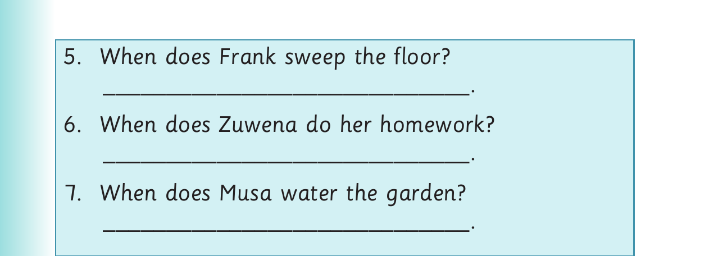

Days of the week - questions and Activity 4

5. When does Frank sweep the floor? _____________________________. 6. When does Zuwena do her homework? _____________________________. 7. When does Musa water the garden? _____________________________.
Activity 4
What do you normally do on the following days?
(a) Monday
(b) Tuesday
(c) Wednesday
(d) Thursday
(e) Friday
(f) Saturday
(g) Sunday